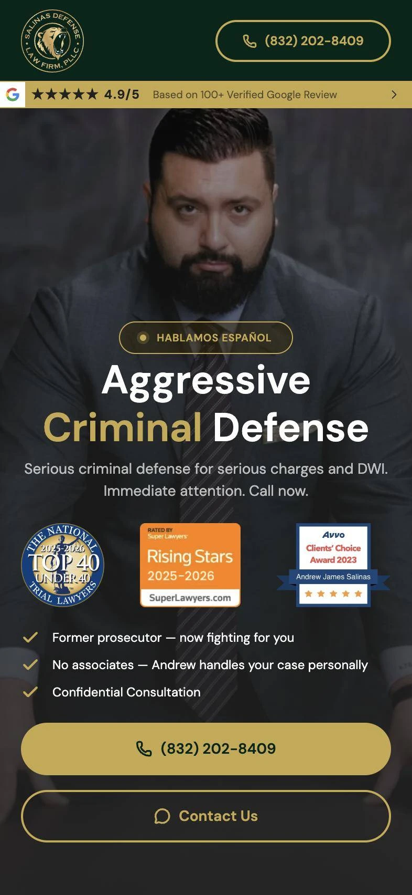
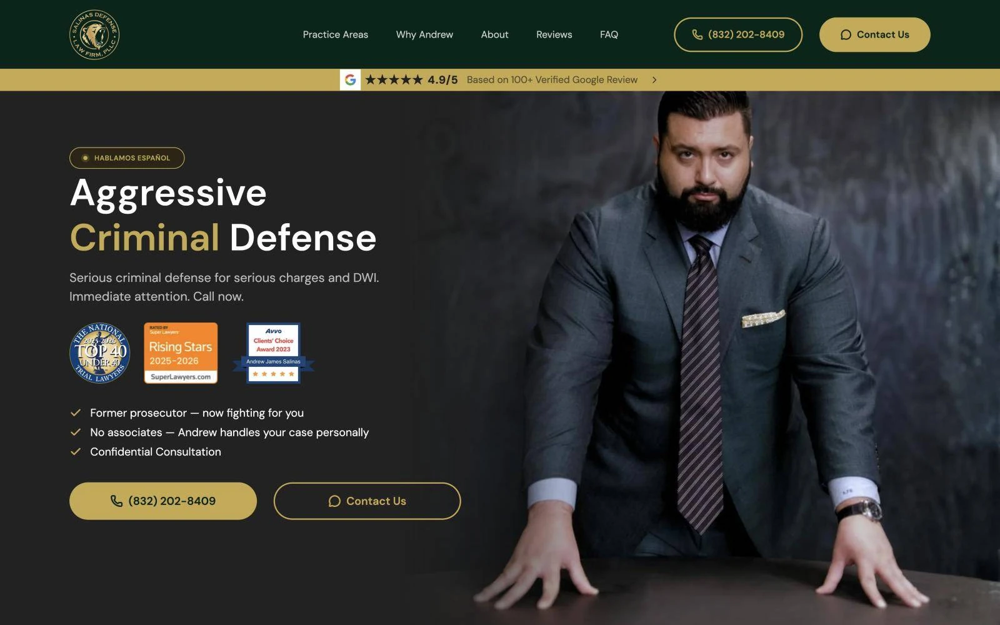
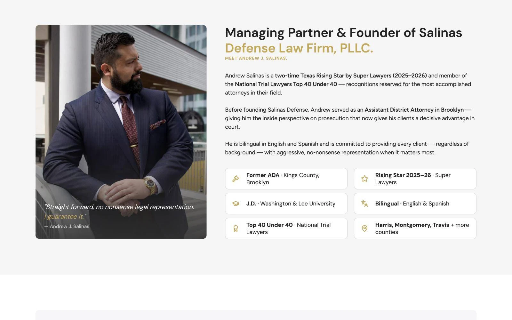
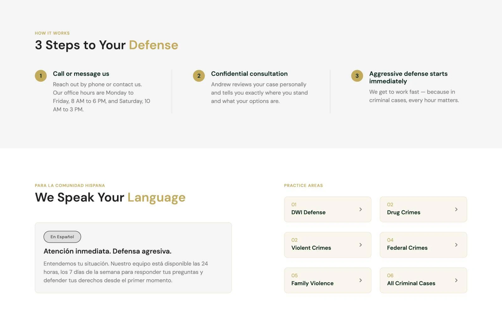
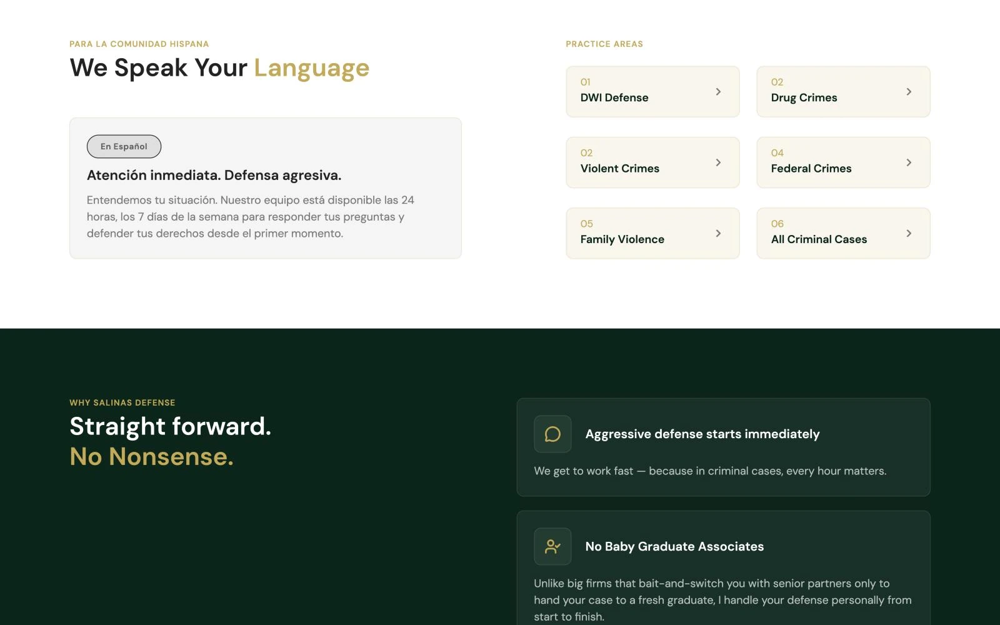
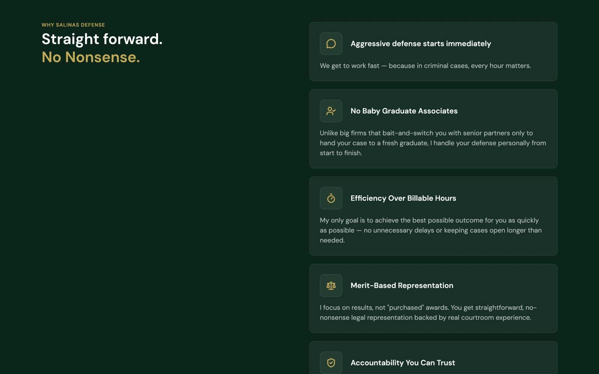
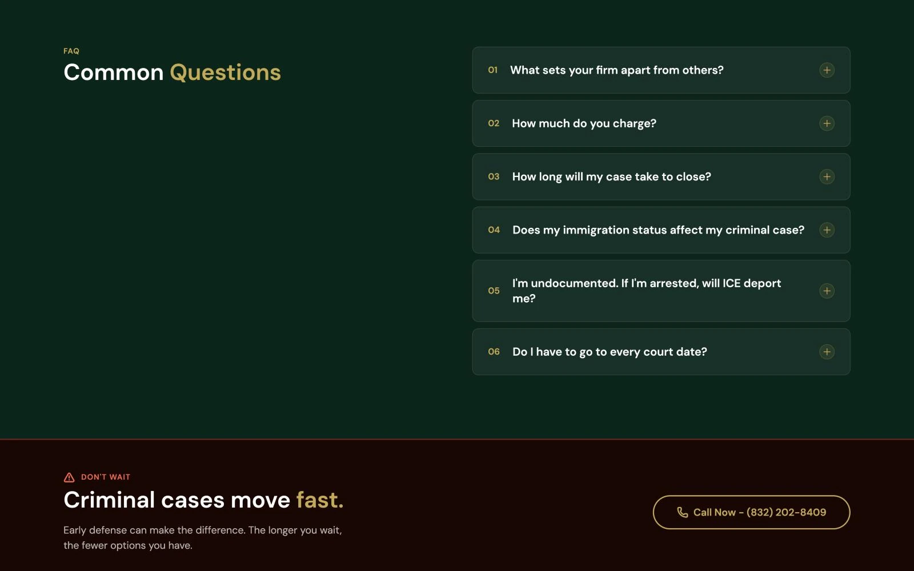
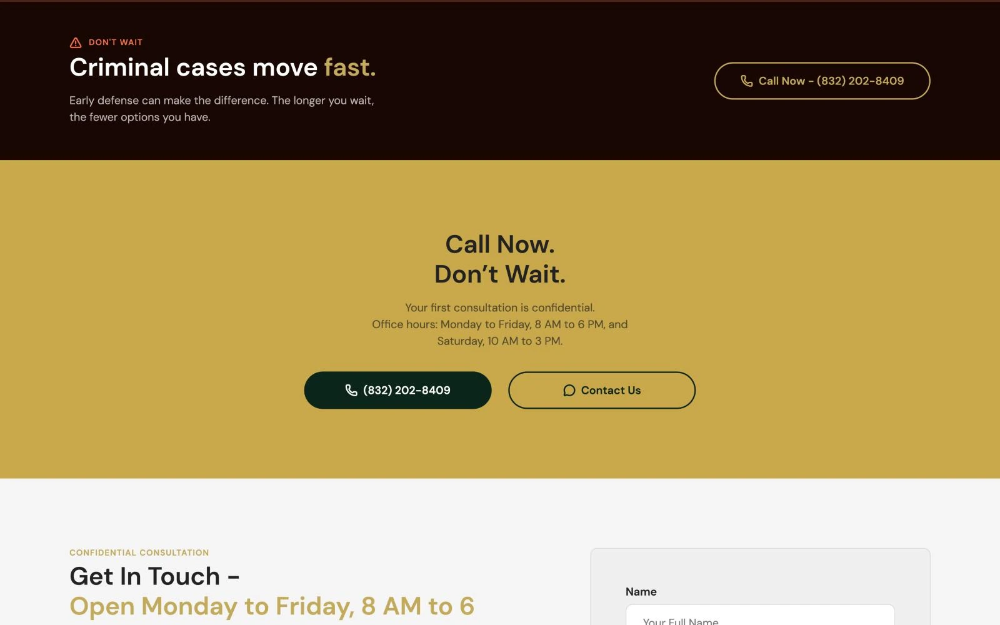
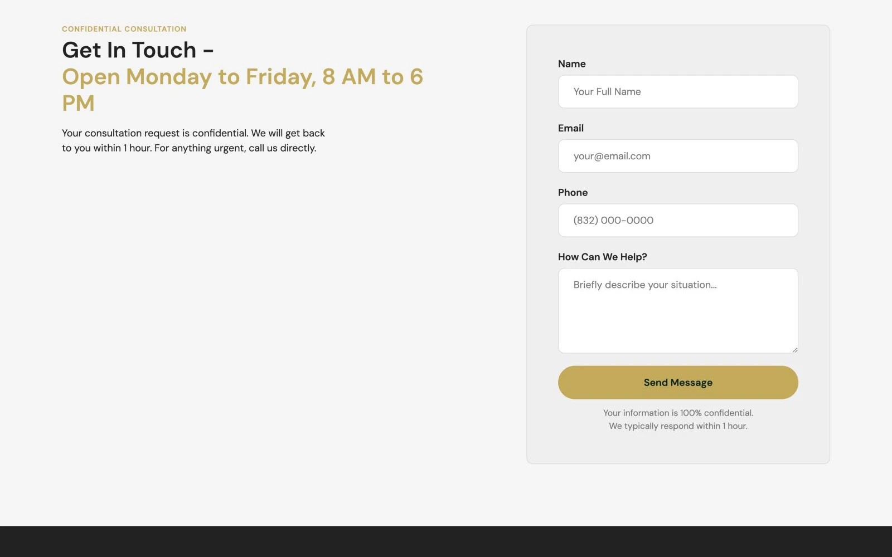
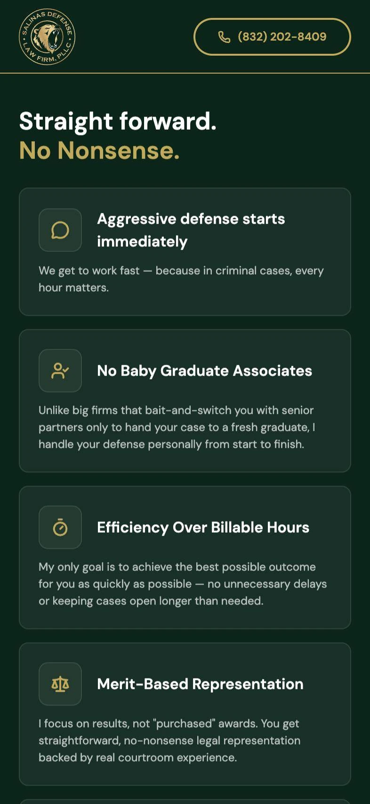

Fear, not curiosity
Visitors aren't shopping. They're scared and short on time, so every line has to calm them down and move them forward.
Legal · Criminal defense · Houston, Texas
Salinas Defense is a Houston criminal defense firm led by Andrew J. Salinas, a former Brooklyn prosecutor who handles every case himself. We designed and built a bilingual landing page in Webflow that turns a frightened visitor into a phone call in seconds, on any screen and in either language.


The challenge
People land on this page because they, or someone they love, have just been arrested. They're on a phone, often late at night, often more comfortable in Spanish. They won't read a long page or compare twelve firms.
In a few seconds the page has to answer three questions: can this lawyer help me, can I trust him, and how do I reach him right now. Everything else is noise.
Visitors aren't shopping. They're scared and short on time, so every line has to calm them down and move them forward.
The search happens on a phone, often at night. A tiny link in the footer is as good as no link at all.
A large part of Houston's families speak Spanish at home. A translate button alone tells them they're an afterthought.
How we worked
Before drawing anything we wrote down what a person feels in the first ten seconds, then gave each of those feelings a section, in that order.
Discovery
We studied how people look for a defense lawyer, what Andrew does differently, and how other Houston firms present themselves.
Structure
Can you help? Who are you? What happens next? What does it cost? Each answer became a section, with a call to action after every one.
Design
Deep green and gold taken from the firm's bear crest, real photography of Andrew and clear type, designed for desktop and mobile in Figma.
Build
Built natively in Webflow with the live Google reviews feed, the confidential form, a language switch and checks on real phones.
The proof we put up front
The idea
A person in crisis doesn't scroll back up to find a contact link. So every block on the page ends with a way to call or write, and the header keeps the number in view the whole time. Wherever someone decides, the button is already under their thumb.
The attorney
A real photo of Andrew, his own words as a pull quote, and six credentials in a tidy grid: former ADA in Brooklyn, Rising Star, Top 40 Under 40, his law school, both languages and the counties he covers.

What happens next
Call or message, a confidential consultation, defense starts immediately. Laid out plainly, with office hours spelled out, so a scared visitor knows exactly what the next ten minutes look like.

Two languages
"Hablamos Español" sits in the hero, and a dedicated block is written in Spanish rather than translated from English. Next to it, six practice areas as clear tiles: DWI, drug, violent, federal, family violence and all criminal cases.

Positioning
Andrew's own voice, in first person. No associates handing your case off, efficiency over billable hours, accountability in court. Each promise gets its own card on a deep green band, a deliberate change of pace from the light sections.

Objections
Price, timing, court dates and, for many families, immigration status and ICE. Answered in a short accordion before anyone has to pick up the phone and ask out loud.

Urgency
A dark band reminds visitors that criminal cases move fast, then a warm gold block makes the call the easiest thing on the screen. Urgent, never pushy.

Mobile first
People searching for a lawyer in a hurry are usually on a phone. The mobile layout puts the number in the header, stacks the awards under the headline and makes both buttons full width. The four-field form is for people who can't talk right now.


Key decisions
In the header and again in the footer.
Everywhere a decision can happen: the header, the hero, after the attorney section, in an urgent band and in the closing block.
A long paragraph about years of experience.
A 4.9 Google rating strip above the hero, three award badges next to the headline and "former prosecutor" as the very first checkmark.
Add a translation plugin and call it done.
"Hablamos Español" in the hero, a section written in Spanish from scratch, plus a full language switch for the rest of the page.
Navy blue, scales of justice and a stock courtroom photo.
The firm's own green and gold, real photos of Andrew and his blunt first-person voice: "No baby graduate associates."
The result
Your project next